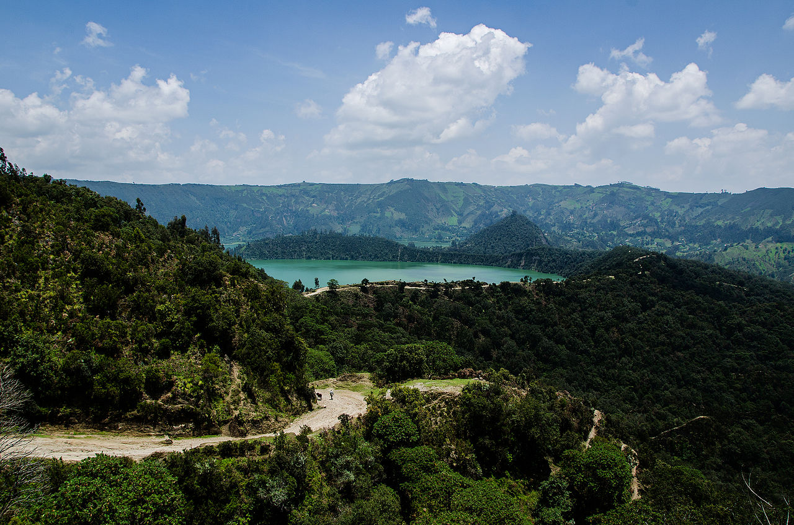

Ethiopia lies in the Horn of Africa on the easternmost part of the African landmass. Ethiopia has a vast highland complex of mountains and plateaus divided by the Great Rift Valley, surrounded by lowlands, steppes and semi-deserts. Ethiopia also contains Lake Tana, which is the primary source of the Blue Nile river which flows into the Nile proper and is where a majority of it's water originates.
Climate wise, Ethiopia is mostly a tropical area, receiving approximately 47 inches of rainfall annually, with temperatures averaging between 68 and 77 degrees F throughout the year during the daytime, making it much cooler on average than other countries along similar lines of the equator. Ethiopia is particularly vulnerable to effects of climate change, including increased temperatures and changing precipitation levels. This can drastically affect food security, since agriculture is such a large component of their economy.
According to the International Monetary Fund, Ethiopia is one of the fastest growing economies in the world, with over 10% economic growth from 2004 to 2009, being the fastest growing non-oil-dependant African economy in 2007 and 2008. Between 2008 and 2011, Ethiopia's economy faced a massive challenge brought on by high inflation, surging to over 40% in August of 2011 because of loose monetary policy, large civil work wage increases and high food prices. They were able to wrangle the inflation back to 22% in 2012, then down to the single digits in 2013.
| Year | GDP |
|---|---|
| 2000 | 8.17 billion USD |
| 2005 | 12.39 billion USD |
| 2010 | 26.89 billion USD |
| 2015 | 63.08 billion USD |
| 2020 | 95.59 billion USD |
While their GDP is rapidly growing, their per capita GDP is still among the lowest in the world, with the economy facing several structural issues. But focused investment in public infrastructure and industrial projects have helped address these problems. Land distribution is handled by the government, which helps ensure the land goes to the most productive user, though corruption has become a problem for land management. This, along with projects often affecting those with no say in them, causes distrust and public protests.
Ethiopia has 14 major rivers and the largest water reserves in Africa. Hydroelectricity is becoming a major factor in their economy, representing 88.2% of their total electricity output. A new massive dam project affecting the Blue Nile is underway, but this has caused contention between Ethiopia and Egypt to the north, infringing on a treaty created in 1959. The Grand Ethiopian Renaissance Dam will be the largest hydroelectric power station in Africa, and allow the country to produce and sell a massive amount of surplus power to neighboring regions.
Agriculture constitutes roughly 85% of Ethiopia's labor force, with many other factors of the economy revolving around the agriculture. Production is overwhelmingly small scale farmers and enterprises, mostly selling cash-crops like coffee, legumes, oilseeds, cereals, potatoes, sugarcane and vegetables, with Ethiopia being Africa's second biggest maize producer as well.
The best-known Ethiopian cuisine consists of various types of thick meat stews, known as wat in Ethiopian culture, and vegetable side dishes served atop injera, a large sourdough flatbread made of teff flour. This is not eaten with utensils, but instead one uses the injera to scoop up the entrées and side dishes. Almost universally in Ethiopia, it is common to eat from the same dish in the center of the table with a group of people. It is also a common custom to feed others in your group with your own hands—a tradition referred to as "gursha". Traditional Ethiopian cuisine employs no pork or shellfish of any kind, as they are forbidden in the Ethiopian Orthodox Christian, Islamic and Jewish faiths.
The music of Ethiopia is extremely diverse, with each of the country's 80 ethnic groups being associated with unique sounds. Ethiopian music uses a distinct modal system that is pentatonic, with characteristically long intervals between some notes. As with many other aspects of Ethiopian culture and tradition, tastes in music and lyrics are strongly linked with those in neighboring Eritrea, Somalia, Djibouti, and Sudan. Traditionally, lyricism in Ethiopian song writing is strongly associated with views of patriotism or national pride, romance, friendship, and a most unique type of memoir known as 'Tizita'.
The main sports in Ethiopia are track and field (particularly long distance running) and football. Ethiopian athletes have won many Olympic gold medals in track and field, most of them in long distance running. Abebe Bikila became the first athlete from a sub Saharan country to win an Olympic Gold medal when he won the Marathon at the 1960 Rome Olympic Games in a world record time of 2:15:16. Ethiopia has sub-Saharan Africa's longest basketball tradition as it established a national basketball team in 1949.